set.seed(123)
# Crear 300 pacientes
n <- 300
# Crear una simulación de neutrófilos, glucosa y aspirina a partir
# de una simulación de inflamación
datos_proxy <- tibble(
inflamacion_real = rnorm(n, mean = 0, sd = 1),
neutrofilos = 4 + inflamacion_real * 1.2 + rnorm(n, 0, 0.8),
glucosa = 90 + inflamacion_real * 8 + rnorm(n, 0, 10),
aspirina = 50 + inflamacion_real * 30 + rnorm(n, 0, 20)
)10.- Aspirina como Proxy de Inflamación
1. Intuición
En medicina muchas veces queremos estudiar cosas que no podemos observar de forma directa.
Por ejemplo:
- No podemos “ver” la resistencia a la insulina
- No podemos medir fácilmente la inflamación crónica de bajo grado
- No podemos saber exactamente cuánto daño metabólico acumulado tiene una persona
Lo que hacemos entonces es usar señales indirectas.
A esas señales indirectas las llamamos variables proxy.
Una variable proxy es una variable observable que usamos como aproximación de otra variable que es más difícil de medir.
Por ejemplo:
- El perímetro abdominal puede ser un proxy de grasa visceral
- La hemoglobina glicosilada puede ser un proxy del promedio de glucosa de los últimos meses
- La proteína C reactiva puede ser un proxy de inflamación
- La dosis de aspirina puede ser un proxy de inflamación o de enfermedad cardiovascular previa
La idea central es simple:
No observamos directamente la inflamación crónica, pero podemos observar cosas que suelen aparecer cuando hay inflamación.
Sin embargo, los proxies tienen una limitación importante:
Nunca son una copia perfecta de la variable real.
La aspirina es un buen ejemplo.
Muchas personas usan aspirina porque:
- tienen dolor o inflamación
- tienen artritis
- tienen riesgo cardiovascular
- han tenido un infarto previo
- un médico les indicó aspirina preventiva
- la toman por automedicación
Eso significa que la aspirina puede estar relacionada con inflamación, pero también con edad, enfermedad cardiovascular, diabetes, obesidad o decisiones médicas previas.
Entonces, cuando vemos que una persona usa más aspirina, no necesariamente significa que “tiene más inflamación”.
Puede significar muchas cosas al mismo tiempo.
Ese es precisamente el reto del pensamiento causal.
Variable observada vs variable latente
Una variable observada es algo que podemos medir directamente.
Por ejemplo:
- IMC
- glucosa
- neutrófilos
- dosis de aspirina
Una variable latente es algo que existe, pero no observamos de manera directa.
Por ejemplo:
- inflamación crónica
- riesgo cardiometabólico global
- resistencia a la insulina
- estrés fisiológico acumulado
Podemos pensar en la inflamación crónica como una especie de “fuego interno” que no vemos directamente, pero del que observamos humo.
Ese humo puede ser:
- neutrófilos elevados
- GGT elevada
- glucosa alta
- obesidad abdominal
- uso de aspirina
La aspirina no es el fuego.
La aspirina es una posible señal de que alguien podría tener más fuego.
¿Por qué usar proxies?
Porque en datos reales no siempre tenemos las variables ideales.
En NHANES no existe una variable perfecta llamada “nivel de inflamación crónica”.
Entonces debemos construir aproximaciones razonables.
La ventaja de los proxies es que permiten estudiar fenómenos complejos.
La desventaja es que pueden introducir ruido, confusión y errores de interpretación.
Asociación no es causalidad
Supongamos que encontramos que las personas que usan más aspirina tienen más glucosa.
¿Eso significa que la aspirina eleva la glucosa?
No necesariamente.
Puede ocurrir que:
- las personas con obesidad tienen más inflamación
- las personas con más inflamación usan más aspirina
- las personas con obesidad también tienen más glucosa
Entonces la obesidad podría ser la verdadera causa de ambas cosas.
Ese fenómeno se llama confusión.
La confusión ocurre cuando una tercera variable influye tanto en la exposición como en el resultado.
En este caso:
- obesidad → más inflamación
- obesidad → más aspirina
- obesidad → más glucosa
Por eso no basta con ver correlaciones.
Necesitamos pensar en historias causales.
Un DAG simple para pensar el problema
Podemos imaginar una historia causal así:
- La obesidad aumenta la inflamación
- La inflamación aumenta la probabilidad de usar aspirina
- La inflamación también aumenta neutrófilos, GGT y glucosa
- La edad aumenta la probabilidad de usar aspirina y también aumenta el riesgo cardiometabólico
La relación puede representarse de forma simplificada así:
- obesidad → inflamación
- inflamación → aspirina
- inflamación → neutrófilos
- inflamación → glucosa
- edad → aspirina
- edad → glucosa
La inflamación está en el centro del sistema, pero no la observamos directamente.
La aspirina es solo una de las pistas que tenemos.
2. Ejemplo simple (simulación en R)
Imaginemos una población pequeña de pacientes.
Queremos representar una variable latente llamada inflamacion_real.
No podemos verla directamente, pero sí podemos observar:
- neutrófilos
- glucosa
- uso de aspirina
Aquí la variable importante es inflamacion_real.
Pero en la vida real no la tendríamos.
Solo veríamos neutrófilos, glucosa y aspirina.
Podemos hacer un gráfico para ver si la aspirina parece reflejar parcialmente la inflamación.
# Diagrama de dispersión y línea suavizada que compara aspirina con
# neutrófilos
ggplot(datos_proxy, aes(x = aspirina, y = neutrofilos)) +
geom_point(alpha = 0.5) +
geom_smooth(method = "lm", se = FALSE) +
labs(
title = "Aspirina como proxy de inflamación",
x = "Dosis de aspirina",
y = "Neutrófilos"
)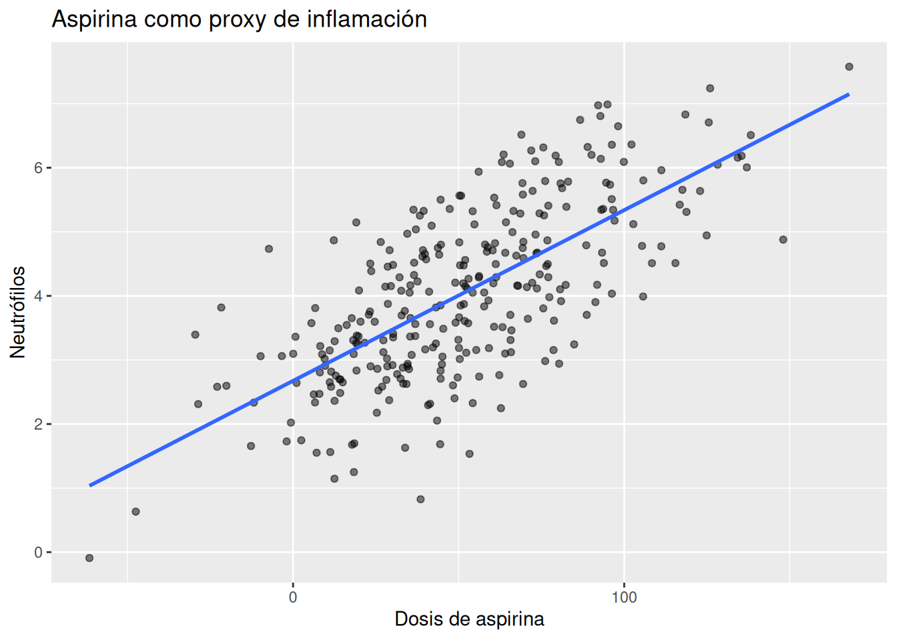
Esperaríamos una tendencia positiva:
- más aspirina
- más neutrófilos
- más inflamación subyacente
Pero la relación no será perfecta, porque la aspirina también tiene ruido.
Podemos añadir un factor de confusión:
# Agregar edad como factor de confusión
datos_proxy <- datos_proxy %>%
mutate(
edad = rnorm(n, mean = 55, sd = 12),
aspirina = aspirina + edad * 0.8
)
# Diagrama de dispersión y línea suavizada que compara aspirina con
# neutrófilos
ggplot(datos_proxy, aes(x = aspirina, y = neutrofilos)) +
geom_point(alpha = 0.5) +
geom_smooth(method = "lm", se = FALSE) +
labs(
title = "Aspirina como proxy de inflamación",
x = "Dosis de aspirina",
y = "Neutrófilos"
)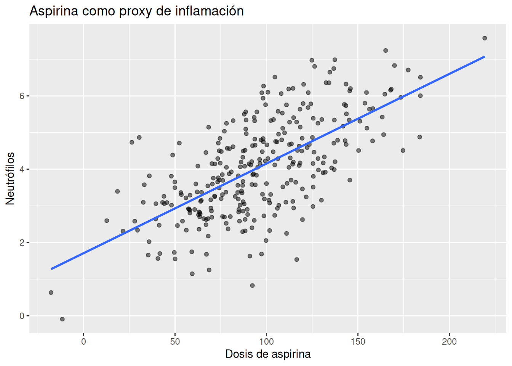
Ahora la aspirina depende tanto de:
- inflamación
- edad
Esto hace que la interpretación sea más difícil.
Una persona puede tomar más aspirina porque tiene más inflamación.
Pero otra puede tomarla simplemente porque es mayor y tiene una indicación preventiva.
3. Ejemplo aplicado con NHANES
Ahora usaremos variables reales de NHANES.
Nos enfocaremos en:
- RXD530: dosis de aspirina
- RXQ515: aspirina prescrita
- RXQ520: aspirina automedicada
- LBDNENO: neutrófilos
- LBDLYMNO: linfocitos
- LBXSGTSI: GGT
- BMXBMI: IMC
- LBXSGL: glucosa
Primero construimos un subconjunto simple.
# Seleccionamos sólo las variables que vamos a usar
df_aspirina <- df_obesidad %>%
select(
RXD530,
RXQ515,
RXQ520,
LBDNENO,
LBDLYMNO,
LBXSGTSI,
BMXBMI,
LBXSGL
) %>%
filter(
!is.na(RXD530),
!is.na(LBDNENO),
!is.na(BMXBMI),
!is.na(LBXSGL)
)Podemos comenzar observando si las personas con mayor dosis de aspirina tienden a tener mayor IMC.
# Diagrama de dispersión y línea suavizada que relacionan la dosis
# de aspirina con índice de masa corporal
my_df_aspirina <- df_aspirina %>%
filter(
RXD530 <= 500
)
ggplot(my_df_aspirina, aes(x = RXD530, y = BMXBMI)) +
geom_point(alpha = 0.3) +
geom_smooth(method = "lm", se = FALSE) +
labs(
title = "Dosis de aspirina e IMC",
x = "Dosis de aspirina",
y = "IMC"
)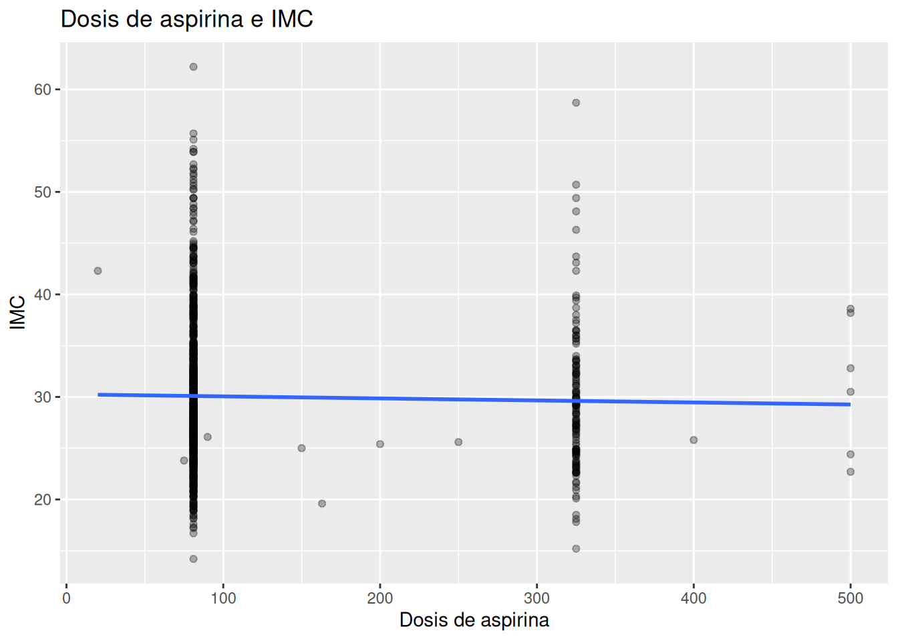
También podemos explorar la relación con neutrófilos.
# Diagrama de dispersión que relaciona la dosis de aspirina con
# netrófilos
my_df_aspirina <- df_aspirina %>%
filter(
RXD530 <= 500
)
ggplot(my_df_aspirina, aes(x = RXD530, y = LBDNENO)) +
geom_point(alpha = 0.3) +
geom_smooth(method = "lm", se = FALSE) +
labs(
title = "Dosis de aspirina y neutrófilos",
x = "Dosis de aspirina",
y = "Neutrofilos"
)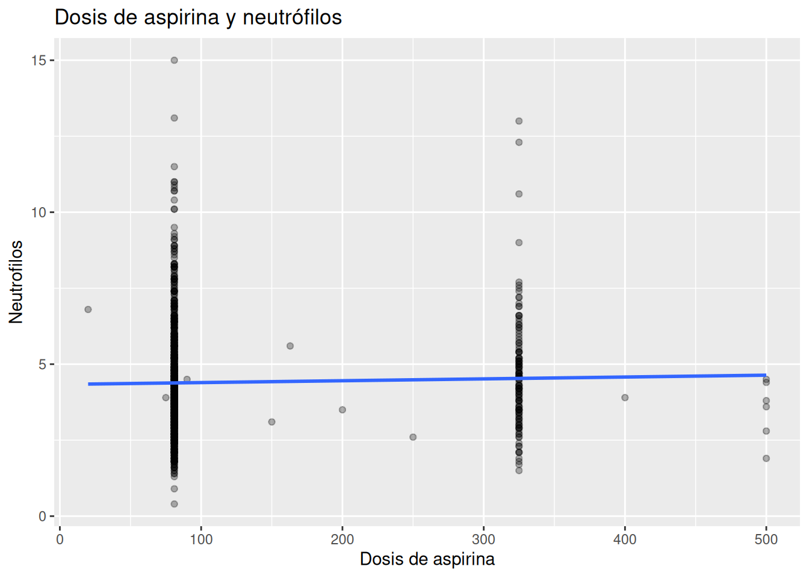
Y con glucosa.
# Diagrama de dispersión que relaciona la dosis de aspirina con
# glicemia
my_df_aspirina <- df_aspirina %>%
filter(
RXD530 <= 500
)
ggplot(my_df_aspirina, aes(x = RXD530, y = LBXSGL)) +
geom_point(alpha = 0.3) +
geom_smooth(method = "lm", se = FALSE) +
labs(
title = "Dosis de aspirina y glucosa",
x = "Dosis de aspirina",
y = "Glucosa"
)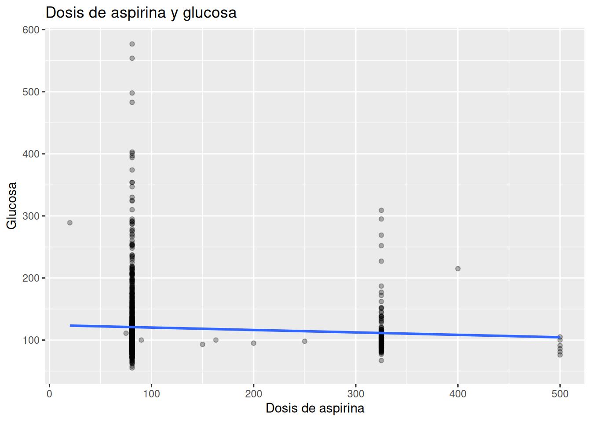
Muchas veces estas relaciones serán débiles, ruidosas o difíciles de interpretar.
Eso no significa que el proxy sea inútil.
Significa que debemos ser cuidadosos.
Crear una variable de uso de aspirina
A veces es más útil trabajar con una variable binaria simple:
# Crear una variable binaria simple
my_df_aspirina <- df_aspirina %>%
filter(
RXD530 <= 500
)
my_df_aspirina <- my_df_aspirina %>%
mutate(
aspirina_cat = case_when(
RXD530 <= 100 ~ "sí", # <= 100mg suele ser la dosis
# antiinflamatoria
TRUE ~ "no"
)
)Ahora podemos comparar grupos.
# Resumir la aspirina antiinflamatoria por imc, glucosa, neutrófilos
# y frecuencia absoluta
tabla_aspirina <- my_df_aspirina %>%
group_by(aspirina_cat) %>%
summarize(
imc_promedio = mean(BMXBMI, na.rm = TRUE),
glucosa_promedio = mean(LBXSGL, na.rm = TRUE),
nos_los_ratio = mean(LBDNENO, na.rm = TRUE),
n = n()
)
knitr::kable(tabla_aspirina) # produce:| aspirina_cat | imc_promedio | glucosa_promedio | nos_los_ratio | n |
|---|---|---|---|---|
| no | 29.47050 | 111.3309 | 4.566187 | 139 |
| sí | 30.11312 | 120.8416 | 4.377941 | 884 |
También podemos visualizarlo.
# Diagrama de caja que relaciona el uso de aspirina por causas
# inflamatorias (<= 100mg) con neutrófilos
ggplot(my_df_aspirina, aes(x = aspirina_cat, y = LBDNENO)) +
geom_boxplot() +
labs(
title = "Neutrófilos según uso de aspirina",
x = "Uso de aspirina",
y = "Neutrófilos"
)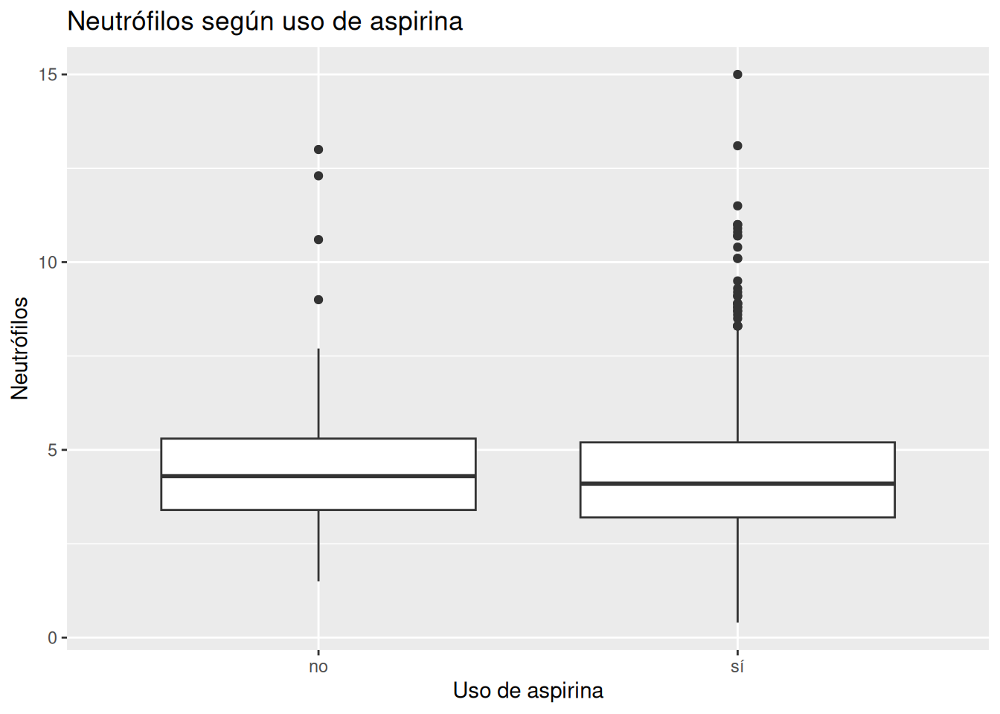
DAG conceptual
Ahora pensemos en la historia causal.
La aspirina no aparece sola.
Hay variables que la anteceden y variables que se relacionan con ella.
Un DAG simple podría verse así:
# Crear un dag simple de aspirina
dag_aspirina <- dagitty("
dag {
obesidad -> inflamacion
edad -> aspirina
edad -> glucosa
inflamacion -> aspirina
inflamacion -> neutrofilos
inflamacion -> glucosa
obesidad -> glucosa
obesidad -> aspirina
}
")
# Visualizar el dag
plot(dag_aspirina)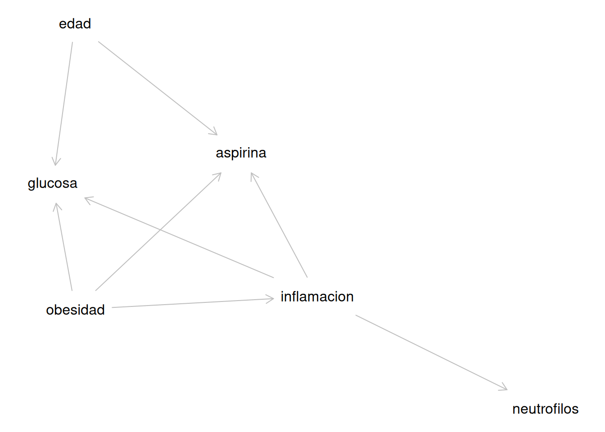
En este DAG, la variable importante es inflamacion.
Pero es una variable latente: no la observamos directamente.
La aspirina y los neutrófilos son indicadores parciales de esa inflamación.
Podemos representar la inflamación latente en el DAG como una variable no observada.
# Crear un dag de aspirina con la aspirina no observada
dag_aspirina2 <- dagitty("
dag {
obesidad -> inflamacion
edad -> aspirina
edad -> glucosa
inflamacion [unobserved]
inflamacion -> aspirina
inflamacion -> neutrofilos
inflamacion -> glucosa
obesidad -> glucosa
}
")
# Visualizar el dag
plot(dag_aspirina2)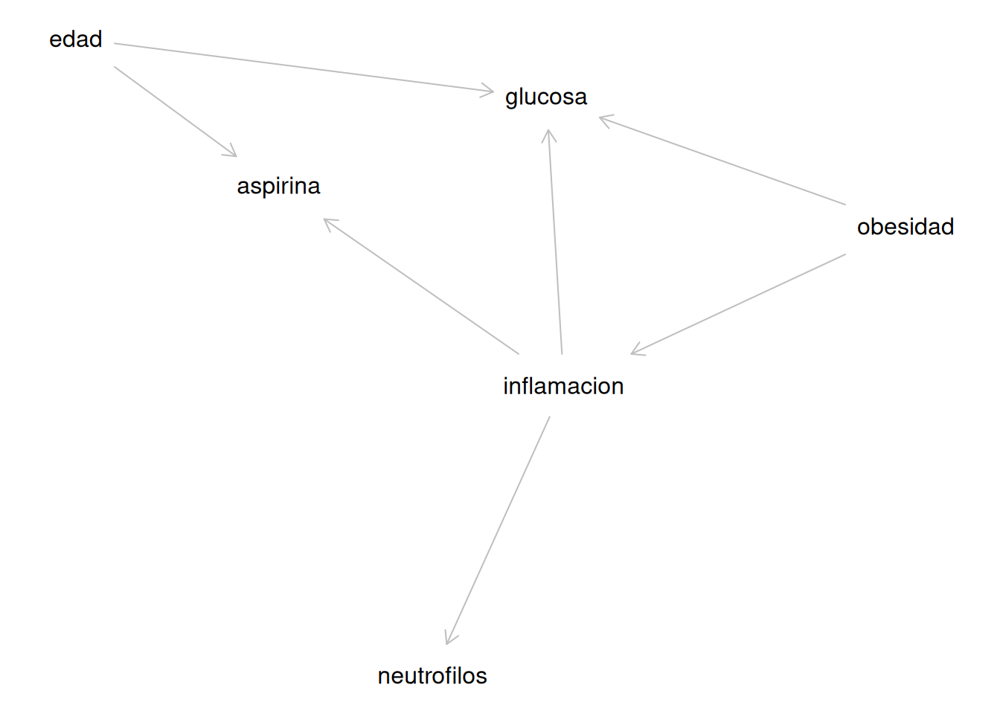
La clave aquí es que la aspirina no debe interpretarse como una medida pura de inflamación.
Es solo una pieza de evidencia.
4. Interpretación clínica
Desde la perspectiva clínica, la inflamación crónica es uno de los ejes centrales de la obesidad.
En La Teoría Hormonal de la Obesidad, la inflamación aparece como parte del círculo vicioso que conecta:
- obesidad
- resistencia a la insulina
- hígado graso
- enfermedad cardiovascular
- diabetes
El problema es que la inflamación de bajo grado no siempre es fácil de medir.
Por eso necesitamos proxies.
La aspirina puede ser útil porque suele aparecer con mayor frecuencia en personas que:
- tienen dolor crónico
- tienen enfermedad cardiovascular
- tienen diabetes
- tienen obesidad
- tienen inflamación persistente
- han recibido indicación médica preventiva
Pero precisamente por eso la aspirina también puede ser engañosa.
Una persona puede usar aspirina por razones totalmente distintas a la inflamación.
Por ejemplo:
- por prevención cardiovascular
- por antecedente de infarto
- por dolor articular
- por recomendación médica relacionada con la edad
Entonces, si usamos la aspirina como proxy, debemos recordar tres ideas:
- Puede contener información útil sobre inflamación
- No representa inflamación de manera pura
- Debe interpretarse junto con otras variables
En la práctica, suele ser mejor combinar varios proxies:
- aspirina
- neutrófilos
- linfocitos
- GGT
- glucosa
- obesidad abdominal
- IMC
Cuando varios de esos indicadores apuntan en la misma dirección, nuestra creencia en la presencia de inflamación crónica se vuelve más fuerte.
Eso es pensamiento bayesiano.
No dependemos de una sola señal.
Integramos múltiples pistas imperfectas para aproximarnos a una realidad que no podemos observar directamente.
Ejercicios
Ejercicio 1 — Pensar como clínico
Sin usar código, responde:
- ¿Por qué la aspirina puede relacionarse con inflamación?
- ¿Por qué la aspirina también puede relacionarse con edad?
- ¿Por qué dos personas con la misma dosis de aspirina podrían tener niveles muy diferentes de inflamación?
- ¿Por qué una relación plana entre aspirina y neutrófilos no significa necesariamente que la aspirina “no sirve”?
Ejercicio 2 — Comparar proxies
Ordena estas variables desde la que crees que podría ser un proxy más fuerte de inflamación hasta la más débil:
- neutrófilos
- GGT
- glucosa
- IMC
- dosis de aspirina
- linfocitos
Luego explica por qué pusiste la aspirina en esa posición.
Ejercicio 3 — Crear una variable binaria de aspirina
Crea una variable llamada aspirina_cat usando RXD530
# Crear una variable binaria simple
my_df_aspirina <- df_aspirina %>%
filter(
RXD530 <= 500
)
my_df_aspirina <- my_df_aspirina %>%
mutate(
aspirina_cat = case_when(
RXD530 <= 100 ~ "sí", # <= 100mg suele ser la dosis
# antinflamatoria
TRUE ~ "no"
)
)Después calcula:
- IMC promedio
- glucosa promedio
- neutrófilos promedio
para los grupos “sí” y “no”.
Pregunta para interpretar:
- ¿Las personas que usan aspirina parecen tener peor perfil - metabólico?
- ¿Crees que eso significa que la aspirina causa ese peor perfil?
Ejercicio 4 — Relación visual con neutrófilos
Haz este gráfico:
# Diagrama de dispersión que relaciona la dosis de aspirina con
# la relación neutrófilos - linfocitos
my_df_aspirina <- df_aspirina %>%
filter(
RXD530 <= 500
)
ggplot(my_df_aspirina, aes(x = RXD530, y = LBDNENO/LBDLYMNO)) +
geom_point(alpha = 0.3) +
geom_smooth(method = "lm", se = FALSE) +
labs(
title = "Dosis de aspirina y neutrófilos/linfocitos",
x = "Dosis de aspirina",
y = "Neutrofilos/linfocitos"
)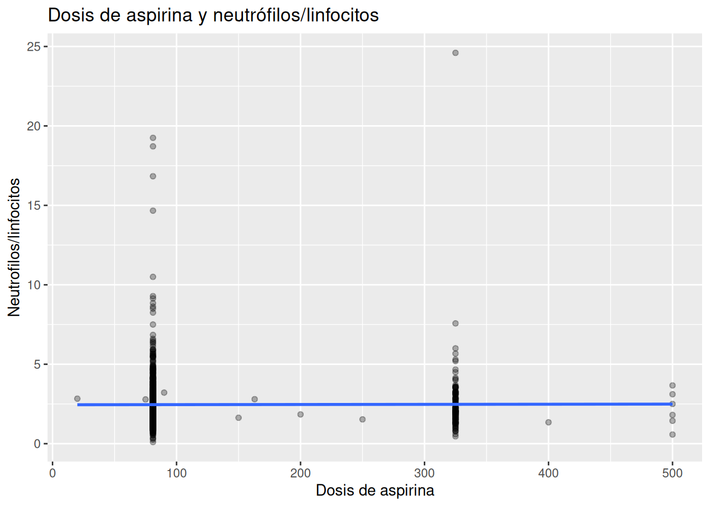
Luego responde:
- ¿La pendiente parece positiva, negativa o plana?
- ¿La relación parece fuerte o débil?
- ¿Qué otras variables podrían estar ocultando una relación más clara?
- ¿Qué te enseña esto sobre los proxies imperfectos?
Ejercicio 5 — Comparar con otro proxy
Haz dos gráficos:
# Diagrama de dispersión que relaciona imc con neutrófilos
ggplot(my_df_aspirina, aes(x = BMXBMI, y = LBDNENO)) +
geom_point(alpha = 0.2) +
geom_smooth(method = "lm", se = FALSE)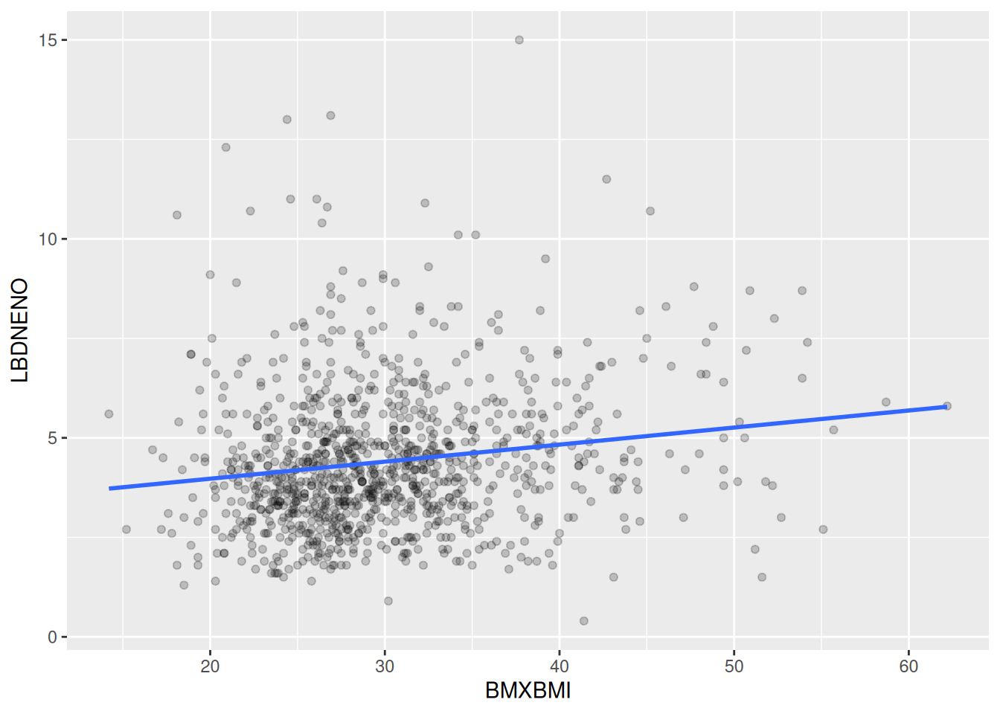
# Diagrama de dispersión que relaciona la dosis de aspirina con los
# neutrófilos
my_df_aspirina <- df_aspirina %>%
filter(
RXD530 <= 500
)
ggplot(my_df_aspirina, aes(x = RXD530, y = LBDNENO)) +
geom_point(alpha = 0.2) +
geom_smooth(method = "lm", se = FALSE)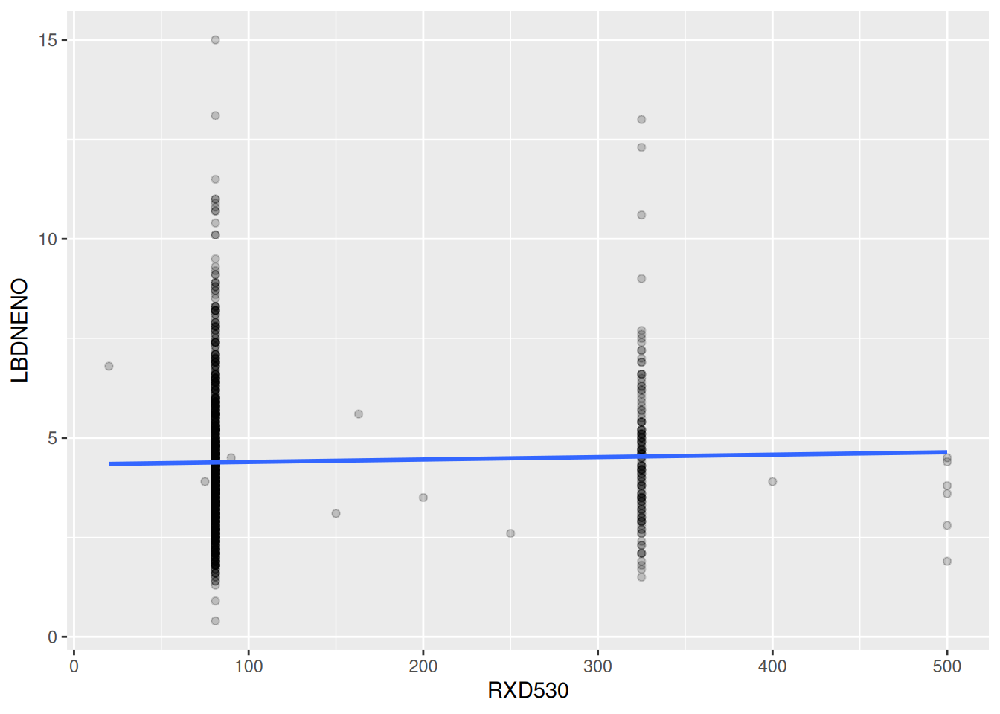
Después compara:
- ¿Qué variable parece relacionarse más claramente con neutrófilos?
- ¿IMC parece un proxy más fuerte de inflamación que la aspirina?
- ¿Qué nos dice esto sobre obesidad e inflamación?
Ejercicio 6 — DAG conceptual
Crea este DAG:
# Crear un dag de aspirina
dag_asprina <- dagitty('
dag {
obesidad -> inflamacion
edad -> aspirina
edad -> glucosa
inflamacion [unobserved]
inflamacion -> aspirina
inflamacion -> neutrofilos
inflamacion -> glucosa
obesidad -> glucosa
}
')
# Visualizar el dag
plot(dag_aspirina)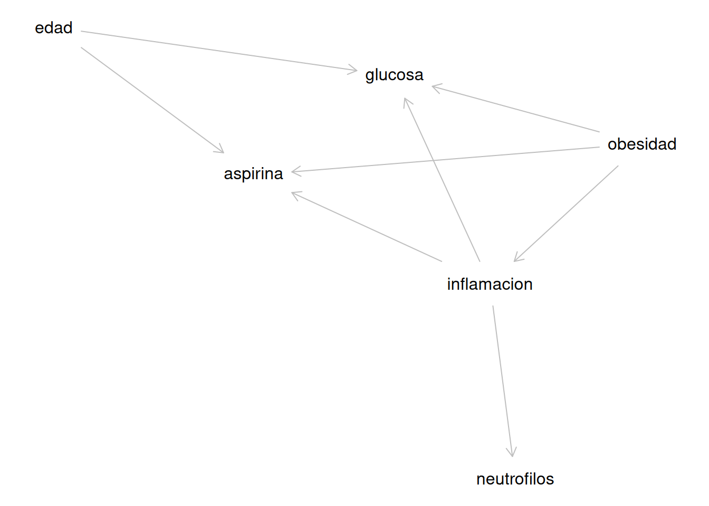
Luego responde:
- ¿Por qué la edad puede confundir la relación entre aspirina y glucosa?
- ¿Por qué la obesidad puede aumentar tanto la inflamación como la glucosa?
- ¿Por qué no sería correcto decir “la aspirina aumenta la glucosa” solamente viendo una asociación?
Ejercicio 7 — Crear una hipótesis bayesiana
Imagina que observas esto:
- IMC alto
- glucosa alta
- neutrófilos ligeramente altos
- uso de aspirina
Escribe una hipótesis clínica simple de 3–5 líneas sobre qué podría estar pasando en esa persona.
La idea no es encontrar “la verdad”, sino practicar pensamiento bayesiano:
integrar varias pistas imperfectas para formar una creencia razonable sobre un proceso no observable como la inflamación crónica.